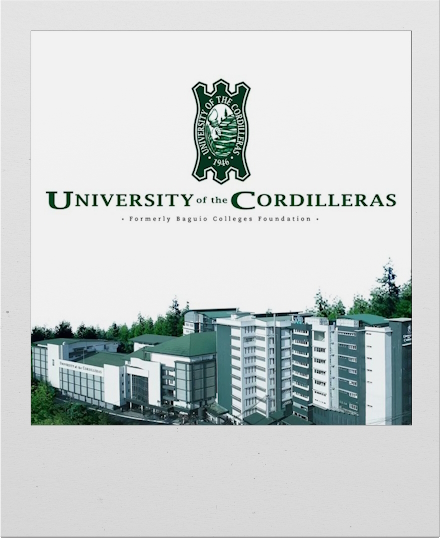
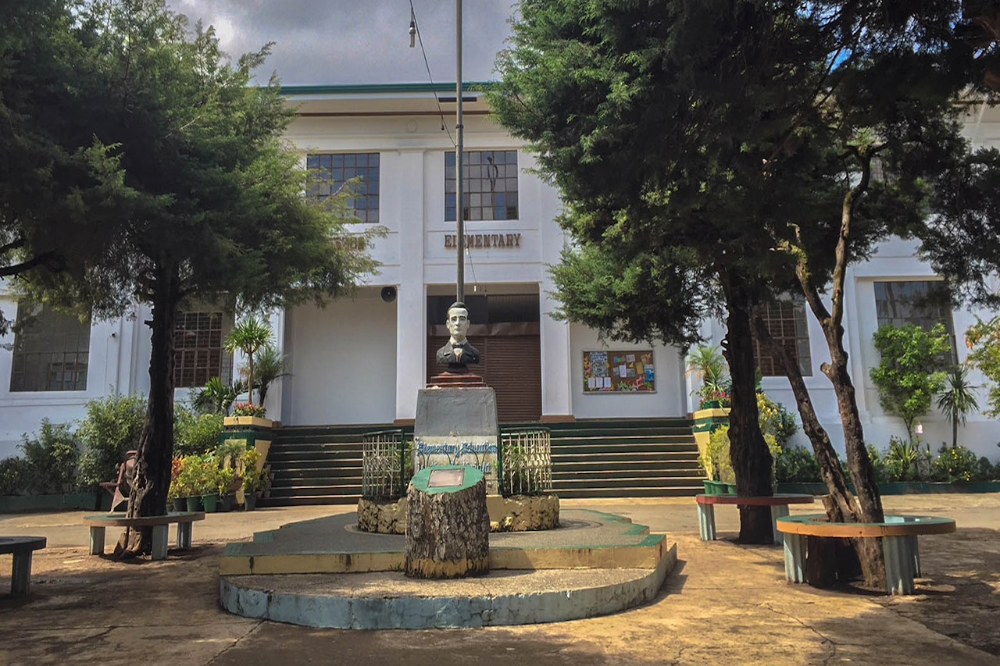
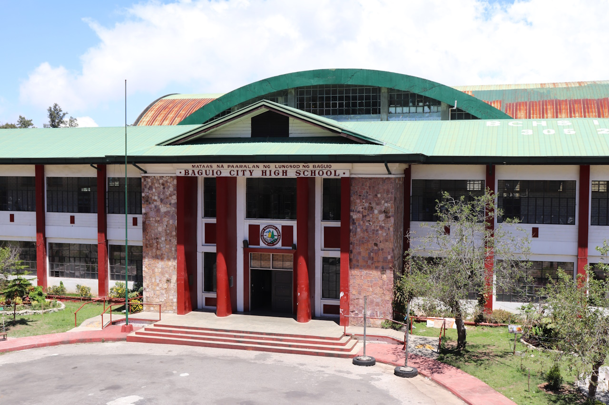
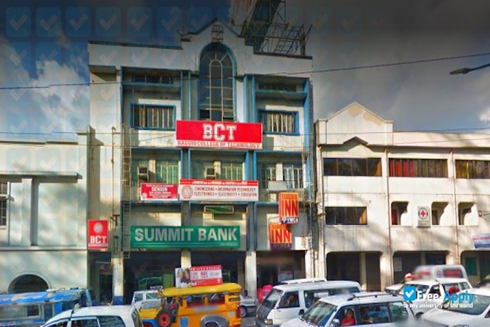
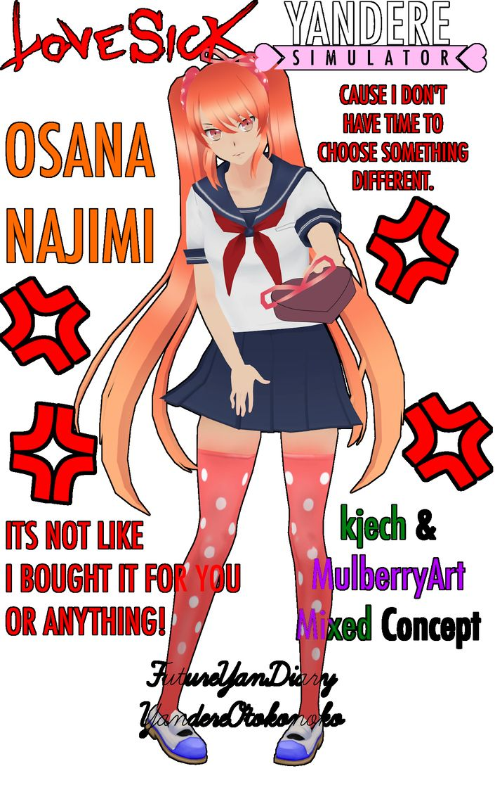
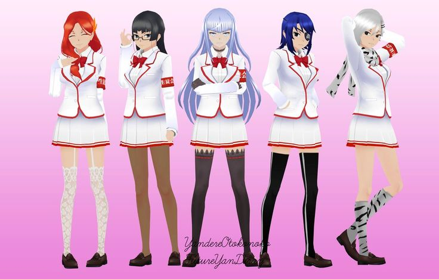
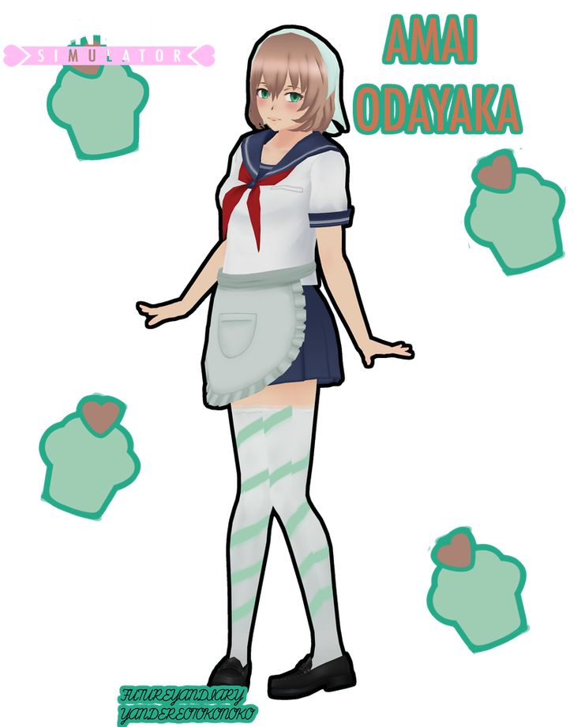

A CITCS student in University of the Cordilleras

Currently a College student...
I'm currently taking up the Information Technology course here in UC (University of the Cordilleras), aiming high to reach my dreams in this academic journey. I am fueled by a burning desire to achieve my dreams in the dynamic and ever-evolving fields of game development, web design, and game design.
To achieve my dreams in these exciting fields, I am fully committed to my coursework, and I continually seek opportunities to gain hands-on experience through projects, internships, and personal creative endeavors. Staying updated with the latest industry trends and technologies is paramount to my success.
My education in the Information Technology program equips me with a solid foundation in computer science and technology, providing me with the tools and knowledge needed to excel in these creative and technical fields. As I continue my academic journey, I remain dedicated to learning, nurturing my creativity, and maintaining unwavering passion for my goals. With determination and hard work, I am confident that I will achieve my dreams of becoming a successful and influential figure in the world of game development, web design, and game design.



Started using Blender back in 2016, I was fascinated to 3D Art and Modeling. I was inspired to do simple game modding from the game Yandere Simulator, which became a key for me to learn Blender, a 3D computer graphics software tool, on my own, without enrolling myself in some kind of school or course. For me, this was a big achievement and a step-up, knowing I can learn the basics of a certain skill, but not in an expert level, by just engaging myself to it.



I also made these back in 2016 until 2019, when I taught myself on how to use Blender by just watching Youtube tutorials. It was really a great experience having to learn something you really are passionate about. Unfortunately, I stopped due to my time not enough due to me still being a student, but I'm happy to go back on making these kinds of 3D renders once I have a more flexible time schedule, preferably when I already finished college. I do miss my creative side, and I hope it won't disappear.
Learn more about me in the about page on top!